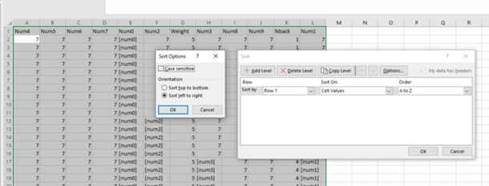
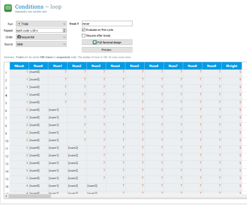
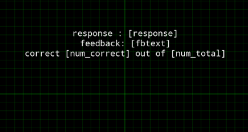

Memory Span Task in OpenSesame
Contents
Memory Span Task in OpenSesame¶
from jupyterquiz import display_quiz
Introduction¶
In this tutorial was are going to adapt an existing memory span task, which can be used to measure one’s working memory storage capacity. This task presents an incremental number of items in a block of trials. The longest list of items that a person can repeat back in a correct order reflects one’s memory span.
Step 1: Download OpenSesame file and adapt it¶
Download the Digit Span task created by Grant M. Berry using the following download link.
Open the file in OpenSesame and try to understand how this experiment works.
Let’s first make the layout of the loop nicer and reorder the columns in the Conditions loop. This is not easy to do in OpenSesame, so use Excel (or other spreadsheet software) instead.
If you use Excel use the following steps:
Copy the entire content of the loop (including headers) to a new sheet in Excel using the clipboard.
Sort the entire table on the first row after having set the sort options to
left to right.
See the screenshot below:

Copy this table and paste it back into the OpenSesame loop after you have deleted all columns first (Ctrl-A > remove all columns).
Your loop should now look like:

Please note that Nback indicates the span of the sequence presented in the corresponding trial.
display_quiz("questions/question_1.json")
Change all Weights to 1. This is easier for debugging later.
display_quiz("questions/question_2.json")
Step 2: Change number stimuli into letters¶
At the moment the GenerateNums assigns values to the experiment variables num0 up to num9. So, when span 10 is reached it will use 10 different numbers. This is done at two moments (the same script is called in two locations!): at the beginning of the experiment (before the loop runs) and at the end of each trial, i.e. before a new trial is prepared.
This is the first part of this code:
nums=[1,2,3,4,5,6,8,9]
random.shuffle(nums)
num0=random.choice(nums)
num1=random.choice(nums)
num2=random.choice(nums)
num3=random.choice(nums)
num4=random.choice(nums)
num5=random.choice(nums)
num6=random.choice(nums)
num7=random.choice(nums)
num8=random.choice(nums)
num9=random.choice(nums)
In the remainder of the code the temporary variables are used to assign the values to the experimental variables using the exp.set method.
However, the experiment is programmed in such a way that number 7 has a special status: if a value in a sequence equals 7 it is skipped (see the Run if conditionals in the Trials sequences. This may be the reason why the creator of this task decided to pick random numbers from the range [1,2,3,4,5,6,8,9] WITH replacement.
Let’s change the task a little bit by using letters instead of numbers and let’s not allow for using the same value multiple times (random WITHOUT replacement). To do so, we can randomly shuffle the order of a range of letters and use a unique location from this reshuffled range for each of the 10 experiment variables (num0 up to num9).
In order to do so, change the piece of code indicated above in the following (complete the … lines). We are going to create the relevant code in the browser first and will paste it into OpenSesame later on.
Complete the code below and run it in the browser:
import random
nums=["A","B","C","D","E","F","G","H","I","J"]
random.shuffle(nums)
num0=nums[0]
num1=nums[1]
num2=nums[2]
num3=nums[3]
num4=nums[4]
#...
#...
#...
#...
#...
print(num0)
print(num1)
#...
#...
#...
#...
#...
A
E
As a next step, we can simply concatenate all nine variables to a single string and print the content (again: complete the code at …)
import random
seq_presented = num0 + num1 + num2 + num3 + num4 # + ...
print(seq_presented)
AECHJ
The Run-If logic in the Trials sequences only presents the first x items, depending on the current Nback span. Let’s therefore print only the number of characters that is indicated in the Nback variable.
The code below does this. Check whether it works if you change Nback to another number.
Nback = 2
seq_presented = seq_presented[0:Nback]
print(seq_presented)
AE
Let’s now make it even more fancy and raise an exception if current_span > maximum length of the sequence. This can be done using the following code:
Nback = 4
if Nback > len(seq_presented):
raise Exception('Invalid value for Nback (%s)' % Nback)
seq_presented = seq_presented[0:Nback]
print(seq_presented)
---------------------------------------------------------------------------
Exception Traceback (most recent call last)
Input In [4], in <cell line: 2>()
1 Nback = 4
2 if Nback > len(seq_presented):
----> 3 raise Exception('Invalid value for Nback (%s)' % Nback)
5 seq_presented = seq_presented[0:Nback]
6 print(seq_presented)
Exception: Invalid value for Nback (4)
If your code works well in the browser, let’s go back to OpenSesame and add it in the proper locations: the code for the presented stimuli should be inserted into GenerateNums and replace the part that refers to numbers.
In addition, add a python inline script before the logger and call it process_trial
Add the code that calculates the seq_presented in this inline.
Make sure you start references to the relevant variables in OpenSesame with var. so OpenSesame knows these are experimental variables that can be accessed in the gui and can be properly logged.
Note The temporary variables and the experimental variables have the same names in the original example. This is not recommended because it will become very confusing. If you use vars.num0=nums[0], you no longer need the exp.set(“num0”,num0) lines.
Run the experiment. Do you see the correct letters presented? Check whether the relevant variables are logged!
Step 3: Provide feedback¶
Let’s now add some python code to provide real-time feedback to the participant that indicated whether the answer provided was correct. Again, let’s first try this out in the browser.
In order to compare whether the response of the user (logged in the response experiment variable in OpenSesame, see Answer object) equals the actual sequences presented we can use the following code. Change the value assigned to response to test whether this works properly.
response = "fcd"
if (response == seq_presented):
print("Correct sequence")
else:
print("Incorrect sequence")
Let’s now make the code a bit smarter. First, let’s make the comparison insentive to the case by making all letters captical using the .upper function. Second, let’s remove spaces that could have been accidentially added by the user using the .strip function. Test whether the following code works:
response = "dgiec"
response = response.upper()
response = response.strip()
if (response == seq_presented):
fbtext = "Correct sequence"
else:
fbtext = "Incorrect sequence"
print(fbtext)
Finally, let’s also calculate the number of correctly retrieved items, ignoring the order:
num_correct = 0
num_total = len(response)
for char in response:
if (seq_presented.find(char)) > -1:
num_correct = num_correct + 1
print(num_correct)
If all the code in step 3 works properly, add it to the proper location in the process_trial inline. Do not forget to add var. to all variables.
Insert a feedback item after the process_trial inline and show the relevant information calculated by the script, like in the example below:

Also make sure you properly log all variables. Test your experiment!
Exercises¶
Exercise 1. Abort the experiment when four trials in a row are incorrect¶
Count the number of trials in a row in which the answer is incorrect. If there are more than four trials in a row abort the experiment.
Exercise 2. Recollect the sequence in reversed order¶
Ask participants to recollect the sequence in reversed order. Change your script so that it check whether the answer matches the sequence in reversed order.
Exercise 3. Ignore duplicates in the answer¶
If the participant provides duplicates in the answer, the number of correctly retrieved items is incorrect. Adapt your script so that duplicates in the response are not considered. Hint: google how to remove duplicate characters in a string